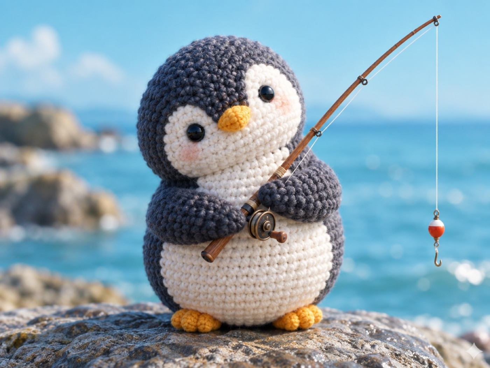

🧪 LAB · 試作 — AIが読書メモから一気に作った記事です。本番の一覧には出していません · 試作の一覧
🐧 EVERYDAY LIFE⚡ 19 SEC
Decide to learn from people, and small talk becomes easy 🎓

Too Many Rules
People say that being interested, asking questions, and praising are important in small talk.
But if you think about all of them at once, your head panics.
Just Learn
So you only decide, "I will learn from this person."
Then questions and praise come out naturally.
⚡ TRY IT
🎓 Who will you learn from?
I went fishing again this weekend! 🎣
Happy meter
Look! I got a new card! 🃏
Happy meter
Welcome to our town! 🏡
Happy meter
Tap the cards and ask like a student. 🎓
✅ Lesson complete! Try another person.
🏆 You learned from everyone! Small talk is easy when you are the student.
Good Hosts
It is said that good TV hosts are actually good at being taught.
📚 I learned this from the Japanese blog "Panda no Ondo".